教你炒股票67：线段的划分标准
(2007-08-01
22:31:55)
笔的划分标准在前面已经严格给出，因此，下一关键问题，就是如何划分线段。下面，给出类似笔划分，但有重大区别的划分标准。用S代表向上的笔，X代表向下的笔。那么所有的线段，无非两种：一、从向上笔开始；二、从向下笔开始。简单起见，以向上笔开始的线段为例子说划分的标准。
以向上笔开始的线段，可以用笔的序列表示：S1X1S2X2S3X3…SnXn。容易证明，任何Si与Si+1之间，一定有重合区间。而考察序列X1X2…Xn，该序列中， Xi与Xi+1之间并不一定有重合区间，因此，这序列更能代表线段的性质。
定义：序列X1X2…Xn成为以向上笔开始线段的特征序列；序列S1S2…Sn成为以向下笔开始线段的特征序列。特征序列两相邻元素间没有重合区间，称为该序列的一个缺口。
关于特征序列，把每一元素看成是一K线，那么，如同一般K线图中找分型的方法，也存在所谓的包含关系，也可以对此进行非包含处理。经过非包含处理的特征序列，成为标准特征序列。以后没有特别说明，特征序列都是指标准特征序列。（娇：这里的描述有欠缺，出现肯定论点后找论据的逻辑顺序错误。没有明确同一段前不能进行非包含处理。）
参照一般K线图关于顶分型与底分型的定义，可以确定特征序列的顶和底。注意，以向上笔开始的线段的特征序列，只考察顶分型；以向下笔开始的线段，只考察底分型。
在标准特征序列里，构成分型的三个相邻元素，只有两种可能：
第一种情况：
特征序列的顶分型中，第一和第二元素间不存在特征序列的缺口，那么该线段在该顶分型的高点处结束，该高点是该线段的终点；特征序列的底分型中，第一和第二元素间不存在特征序列的缺口，那么该线段在该底分型的低点处结束，该低点是该线段的终点；（娇注：这里描述不全面，后期有补充。）
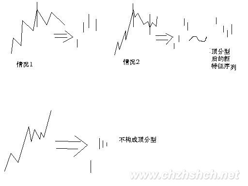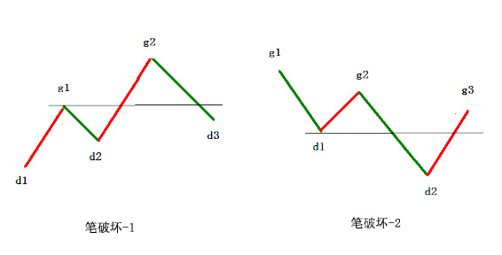
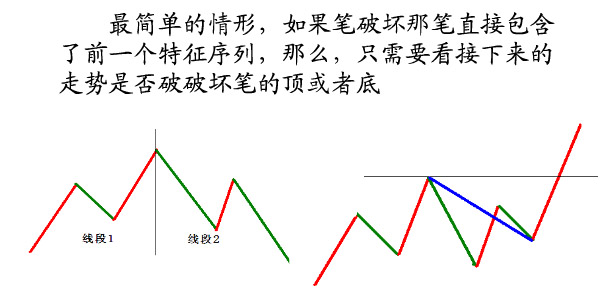
第二种情况：
特征序列的顶分型中，第一和第二元素间存在特征序列的缺口，如果从该分型最高点开始的向下一笔开始的序列的特征序列出现底分型，那么该线段在该顶分型的高点处结束，该高点是该线段的终点；特征序列的底分型中，第一和第二元素间存在特征序列的缺口，如果从该分型最低点开始的向上一笔开始的序列的特征序列出现顶分型，那么该线段在该底分型的低点处结束，该低点是该线段的终点；
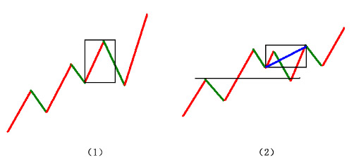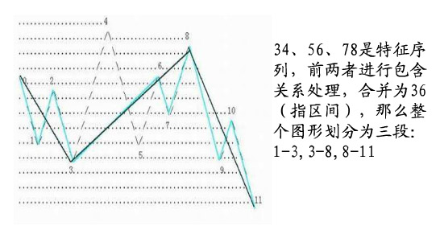
（注：第二种情况属于第三线段成立倒推第二线段成立的判断）
强调，在第二种情况下，后一特征序列不一定封闭前一特征序列相应的缺口，而且，第二个序列中的分型，不分第一二种情况，只要有分型就可以。
上面两种情况，就给出所有线段划分的标准。显然，出现特征序列的分型，是线段结束的前提条件。本课，就是把前面“线段破坏的充要条件就是被另一个线段破坏”精确化了。因此，以后关于线段的划分，都以此精确的定义为基础。
这个定义有点复杂，首先请先搞清楚特征序列，然后搞清楚标准特征序列，然后是标准特征序列的顶分型与底分型。而分型又以分型的第一元素和第二元素间是否有缺口分为两种情况。一定要把这逻辑关系搞清楚，否则一定晕倒.（娇注：这里的线段划分顺序是错误的论述，注意看后期补充）
显然，按照这个划分，一切同一级别图上的走势都可以唯一地划分为线段的连接，正如一切同一级别图上的走势都可以唯一地划分笔的连接。有了这两个基础，那么整个中枢与走势类型的递归体系就可以建立起来。这是基础的基础，请务必搞清楚，否则肯定学不好。
最后，尽量画点图，让各位分清楚上面的一些概念，但最好把定义看清楚，这才是真正理解，图只是一个辅助。前两个图形中标出了线段的划分。
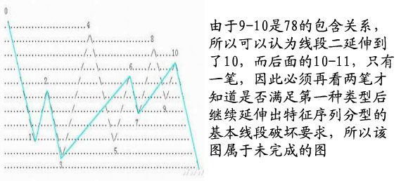
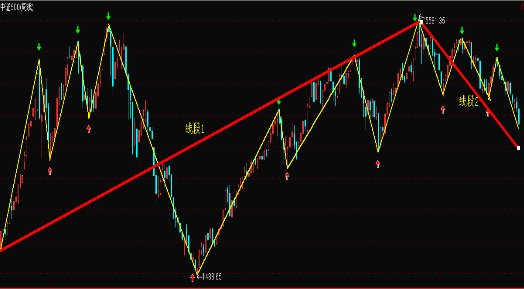
==========================================================================================
1、学习用图：
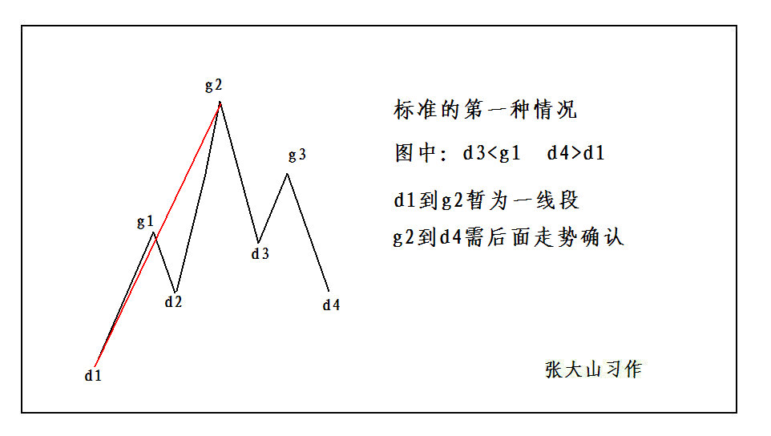
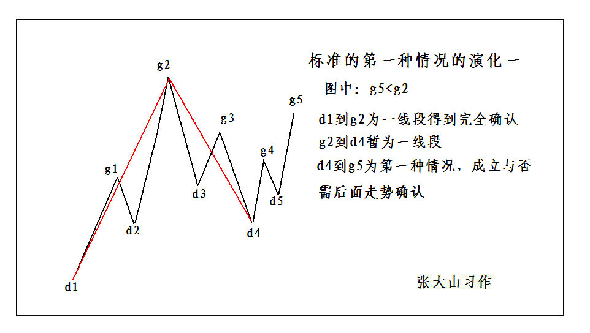
2、标准的第二种情况：
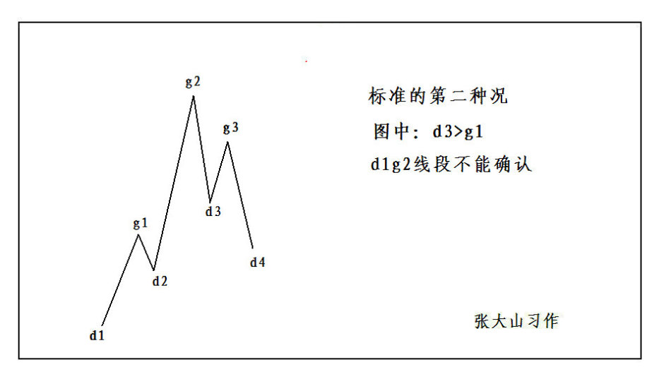
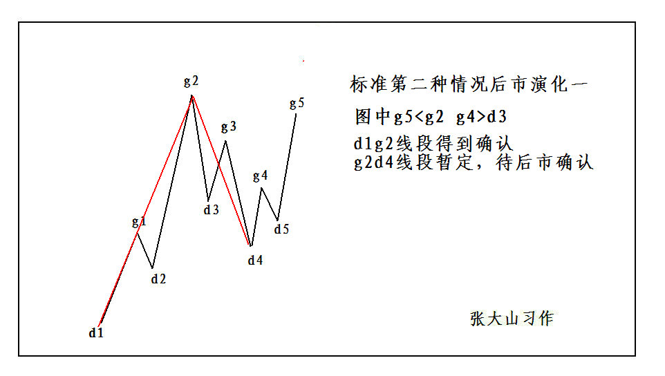
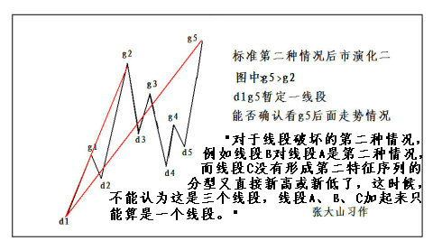
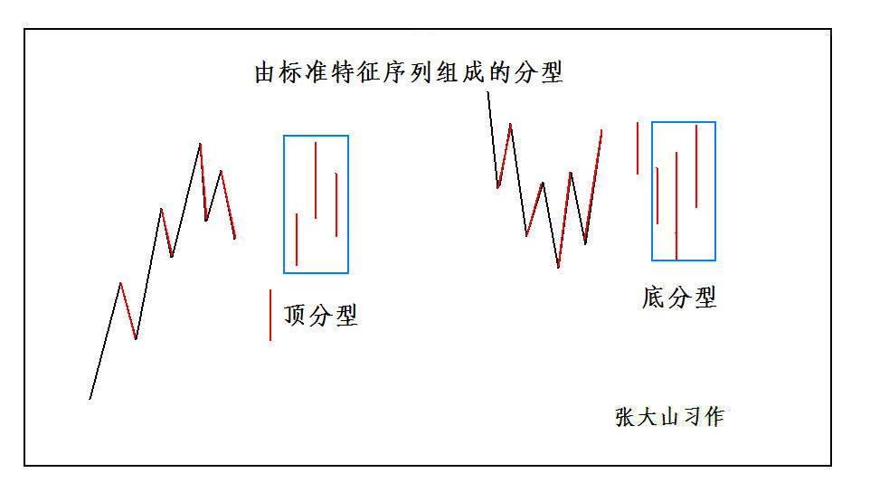
3、由标准特征序列组成的分型：注：下图右边图形底分有误
4、标准线段的特征序列分型形态：
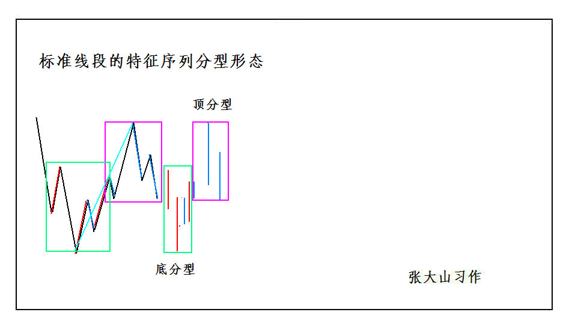
5、同一线段中，两端的一顶一底，顶肯定要高于底。
6、线段破坏的确认：
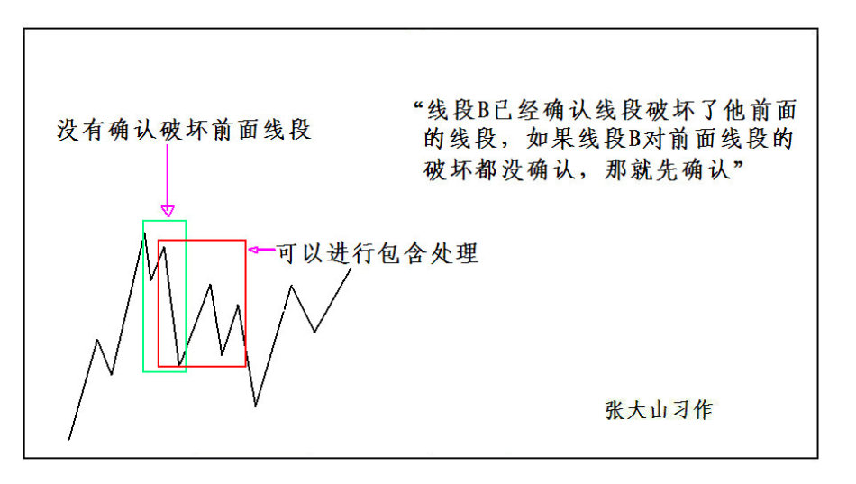
7、同样，正如同一笔不可能出现顶低于底的情况，同一线段中，两端的一顶一底，顶肯定要高于底，如果你划出一个不符合这基本要求的线段，那肯定是划错了。（为了学习便，仅把缠师在8月13日在博后的答复附上）
======================
*****8种情况分析*****
======================
第一种情况（标准的第１种情况）
----------------/\g2---------------------
---------------/--\----------------------
--------------/----\---------------------
-------------/------\------g3------------
------------/--------\----/\-------------
-----------/----------\--/--\------------
----/\g1--/------------\/----\-----------
---/--\--/--------------d3-- -\----------
--/----\/d2------------------ -\d4-------
-/d1--------------------------------------
分段分析：对于g2处的顶分型，其特征序列元素为g1d2、g2d3、g3d4，由于d3低于g1很显然属于标准的第一种情况，因此g2处的顶分型可以确认。该图是两段，d1-g2是一段，g2-d4是一段。
当下分析：这种情况下，一般会表现为d2g2力度与d1g1盘背。如果d2g2与d1g1盘背，应该在g2处抛掉半仓（因为不能肯定是否会跌破g1），等g3回试不创新高后再抛光剩余的筹码；如果d2g2与d1g1不背驰，则可以在g3回试不创新高后清仓。
第二种情况（标准的第２种情况之１）
----------------g6---------------------g9
---------------/\----g7------------ -/---
--------------/--\--/\--------g8- --/----
-------------/----\/--\------/\----/-----
------------/---- d7-- \----/--\--/------
-----------/------------\--/----\/-------
----/\g5--/--------------\/-----d9------
---/--\--/---------------d8-------------
--/----\/d6-----------------------------
-/d5------------------------------------
分段分析：图中对于g6处的顶分型，其特征序列元素为g5d6、g6d7、g7d8，由于d7高于g5很显然第一和第二两个元素之间有缺口，属于第二种情况，这时g6的顶分型不能确认。再往下看，对于d8处的底分型，其特征序列元素为d7g7、d8g8、d9g9，很显然d8处的底分型是第一种情况，这样g6处的顶分型可以确认，同时d8处的底分型也可以确认，因此该图分成三段，d5-g6是一段，g6d8是一段，d8g9是一段。
当下分析：这种情况下，往往g6这里上涨力度并不背驰，所以不抛，而走到g7时，虽然g6处的顶分型还未能得到确认，但不创新高，还是要抛掉半仓。即使事后发现抛错，之后股价继续上涨突破了，但也还是有机会在三买点再重新把抛掉的半仓补回来，所以并不算踏空，而且更加安全；如果股价不涨，则剩余半仓在三卖点清掉！
第三种情况（标准的第２种情况之２）
----------------g6------------------g9---
---------------/\----g7----- ------/-----
--------------/--\--/\------------/------
-------------/----\/--\------g8- /-------
------------/----d7--- \----/\--/--------
-----------/------------\--/--\/---------
----/\g5--/--------------\/----d9--------
---/--\--/---------------d8--------------
--/----\/d6------------------------------
-/d5-------------------------------------
分段分析：这个图的g6处的顶分型是第二种情况就无需多说了，而d8处的底分型很显然也是第二种情况，因此g6处的顶分型成立，但d8处的底分型由于看不到后续的图所以无法确认的。因此该图是个未完成的图形，只能确认d5-g6是一段，后面的线段暂时无法确认，要等走出来才知道。
当下分析：g7抛半仓，由于g8不升破d7所以清仓。d9由于不创新低，所以要重新补回半仓，之后看第三类买卖点的情况决定是回补还是清仓。
第四种情况（特殊的第１种情况之１）
----------------/\g2---------------------
---------------/--\----------------------
--------------/----\---------------------
------g1-- --/------\-------g3----------
------/\----/--------\------/\-----------
-----/--\--/----------\----/--\----------
----/----\/------------\--/----\---------
---/------d2------------\/d3--- \--------
--/--------------------------- --\d4-----
-/d1-------------------------------------
分段分析：这个图g2处的顶分型显然是第一种情况，特殊之处在于特征元素g2d3完全包含了特征元素g1d2，但由于g2d3并不属于线段d1-g2的特征元素，因此不能做包含处理，所以g2处的顶分型是成立的。关于这种情况，71课中有详细论述："最后一种情况，就是最早破坏那笔就是转折点下来的第一笔，这种情况下，这一笔，如果后面延伸出成为线段的走势，那么这一笔就属于中间地带，既不能说是前面一段的特征序列，更不能说是后一段的特征序列，在这里情况下，即使出现似乎有特征序列的包含关系的走势，也不能算，因为，这一笔不是严格地属于前一段的特征序列，属于待定状态"。所以这个图是两段，d1-g2是一段，g2-d4是一段。
当下分析：直到g3完成时，都先与第一种情况相同处理即可（在g3这里一定要清仓完毕）。之后看第三类买卖点的情况决定如何操作。
第五种情况（特殊的第１种情况之２）
----------------------- --------- ---g4-/--
-------------------------------- ------/--
----------------/\g2------------ -----/---
---------------/--\------------- ----/----
--------------/----\------------ ---/-----
------g1-- --/------\-------g3-----/------
------/\----/--------\------/\----/-------
-----/--\--/----------\----/--\--/--------
----/----\/------------\--/----\/ d4-----
---/-----d2------- -----\/d3-------------
--/---------------------------------------
-/d1-------------------------------------
分段分析：这个图g2处的顶分型显然是第一种情况，但是由于特征元素g2d3和g3d4完全是包含关系，根本没有形成第三个特征元素，显然顶分型不成立，因此该图只有一个线段，即d1-g4是一个线段。关于这种情况，71课中也有详细论述:"还有更复杂一点的情况，就是第三笔完全在第一笔的范围内，这样，这三笔就分不出是向上还是向下，这样也就定义不了什么特征序列，为什么？因为特征序列是和走势相反的，而走势连方向都没有，那怎么知道哪个元素属于特征序列？这种情况，无非两种最后的结果：１、最终，先破第一笔的开始位置，这样，旧线段只被一笔破坏，接着就延续原来的方向，那么，显然旧线段依然延续，新线段没有出现（说的就是这第五种情况）；２、最终还是先破了第一笔的结束位置，这时候，新的线段显然成立，旧线段还是被破坏了（这是下面要说的第六种情况）。
当下分析：直到g3完成时，都先与第一种情况相同处理即可（在g3这里一定要清仓完毕）。虽然d4不跌破d3，但切不可盲目捡回，一定要耐心等待，观察最后的突破方向。如图g4向上突破后，可以在回抽的三买点全仓介入。
第六种情况（特殊的第１种情况之３）
----------------/\g2-------------------------
---------------/--\--------------------------
--------------/----\-------------------------
-------g1-- -/------\------ g3----g4-------
------/\----/--------\------/\----/\---------
-----/--\--/----------\----/--\--/--\--------
----/----\/------------\--/----\/----\-------
---/------d2------------\/d3- -d4-----\------
--/------------------------------------\-----
-/d1-------------------------- ---------\d5-
分段分析：这个图就是上面所描述的两种结果中的另一种演变结果，g2处的顶分型是第一种情况，特征元素g2d3和g3d4可以合并，这样g1d2、g2d4、g5d5就组成了此顶分型的三个特征序列元素，因此g2处的顶分型可以确认，这个图分成两段，d1-g2是一段，g2-d5是一段。
当下分析：直到g3完成时，都先与第一种情况相同处理即可。如图，g4向上突破未果，之后d5向下突破成功后，如果g4d5与g2d3盘背，则在d5全仓介入。之后如果震荡未进入中枢，而是形成了第三类卖点，则清仓。
第七种情况（特殊的第２种情况）
----------------g6----------------/g9-
---------------/\----g7----/\g8 -/------
--------------/--\--/\----/--\--/--------
-------------/----\/--\--/----\/---------
------------/-----d7---\/-----d9-------
-----------/------------d8------------
----/\g5--/----------------------------
---/--\--/------------------------------
--/----\/d6----------------------------
-/d5-----------------------------------
分段分析：这张图中，g6的顶分型明显是第二种情况，但在d8的底分型是否成立的问题上一定要注意，这里由于g8等于或高于g7，使得特征序列元素d7g7和d8g8相包含，做过包含处理以后变成d8g7，这样这里的特征元素就只有d8g7、d9g9两根，显然不构成底分型，因此g6处的顶分型也不能成立，这张图只有一线段，即d5-g9是一个线段。这个问题在78课中有详细论述："对于第二种情况的第二特征序列的分型判断，必须严格按照包含关系的处理来，这里不存在第一种情况中的假设分界点两边不能进行包含关系处理的要求。为什么？因为在第一种情况中，如果分界点两边出现特征序列的包含关系，那证明对原线段转折的力度特别大，那当然不能用包含关系破坏这种力度的呈现。而在第二种情况的第二特征序列中，其方向是和原线段一致，包含关系的出现，就意味着原线段的能量充足，而第二种情况，本来就意味着对原线段转折的能量不足，这样一来，当然就必须按照包含关系来。" 要顺便提一句的是，开篇时所提到的那次抛早的情况，就是这种。
第八种情况（特殊的第３种情况）
----------------/\g2---------g3---------------------/-g6---
---------------/--\------- ----/\--------------g5--/------
----------- --/----\----------/--\------ -----/\--/----
------g1-----/------\--------/----\--/\-g4---/--\/-----
------/\----/--------\------/------\/--\----/---d6----
-----/--\--/----------\----/------d4----\--/---------
----/----\/------------\--/------ -------\/----------
---/-----d2-------------\/d3------------d5-------
--/----------------------------------------------
-/d1---------------------------------------------
分段分析：此图中g2的顶分型显然是第一种情况，且g2d3直接破坏了线段d1g2，但后面d5并没有下破d3，因此这的情况非常特殊。现在，如果将g2d3和g3d4进行合并，就可以得到新的特征元素g2d4，因此就有g1d2、g2d4、g4d5三个特征序列元素，因此g2处的顶分型成立，后面由于d5g5一笔直接破坏g2-d5这线段，因此d5-g6也是一段，此图是三段：d1-g2，g2-d5，d5-g6。这种情况与79课中举的一个例子相同，不过那个图是向下开始的，这个图是向上开始的，实质是一样的。通过这种最特殊的例子，我们可以看到，某线段的段点并不一定是该段的最高最低点，并且可以精确地总结出如下结论：上涨线段，段内可以有最高点，不能有最低点；下跌线段，段内可以有最低点，不能有最高点。此结论亦与笔画分所得出的结论惊人的相似，看来禅论中的各个结论都是处处相通的！
2007-08-13 21:56:16
[匿名] 深潜江湖 删除此人所有评论
2007-08-13 21:40:22
老师好。
大家现在对今天的32-33为什么不是三段有争论。毕竟符合其中的底分型成立的定义。
希望老师能讲讲。
另，我对各级别的组合后再寻找区间套特别乱，希望老师能说说
前面写错了，致歉。
==
请先搞清楚底分型是从哪里开始算起，哪里开始结束。在这种前面是下跌的，对应的第二是上涨的，其特征序列就是看向下的，这第三个向下的，已经跌破原来第一段的底，怎么能属于第二段里的特征序列？
特征序列的底或顶，首先必须要都属于这个特征序列才行，这是前提条件。其实，如果第二特征序列没有三个元素，就根本不存在出现分段中第二种情况的可能。
上面问题的原图：
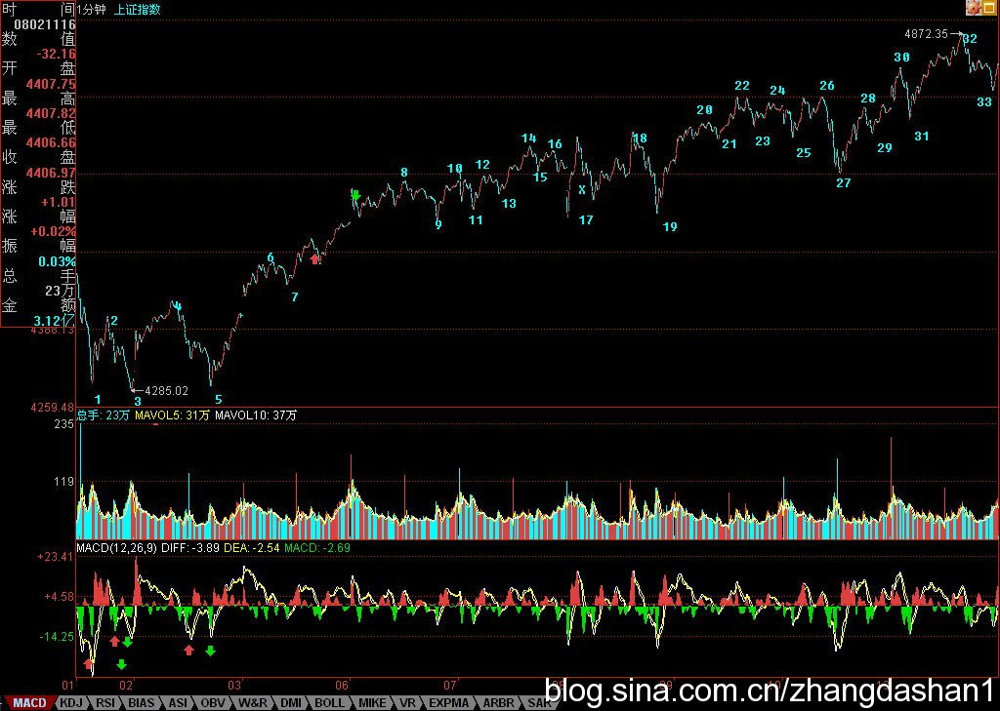
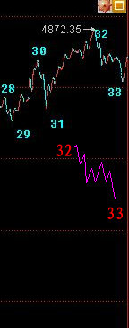
8、
2007-08-16 16:40:09
紧急请教博主：
今天上证指数44处根据线段定义，似乎不是顶分型啊，因为随后一笔大幅下跌形成包含关系。
这里的疑惑，一定帮忙解答一下，因为这个问题很普遍啊，不搞清楚，很难分好线段
==
这里是第一种情况，也就是特征序列缺口被第一笔就封闭的情况，没必须探讨第二段特征序列分型的问题，那是第二种情况考虑的问题。
(2007-08-16 16:44:08)
********************
本ID把课程里两种情况的论述复制过来，各位请好好研究：
在标准特征序列里，构成分型的三个相邻元素，只有两种可能：
第一种情况：
特征序列的顶分型中，第一和第二元素间不存在特征序列的缺口，那么该线段在该顶分型的高点处结束，该高点是该线段的终点；特征序列的底分型中，第一和第二元素间不存在特征序列的缺口，那么该线段在该底分型的低点处结束，该低点是该线段的终点；
第二种情况：
特征序列的顶分型中，第一和第二元素间存在特征序列的缺口，如果从该分型最高点开始的向下一笔开始的序列的特征序列出现底分型，那么该线段在该顶分型的高点处结束，该高点是该线段的终点；特征序列的底分型中，第一和第二元素间存在特征序列的缺口，如果从该分型最低点开始的向上一笔开始的序列的特征序列出现顶分型，那么该线段在该底分型的低点处结束，该低点是该线段的终点；
(2007-08-16 16:46:08)
********************
石头叁 删除此人所有评论
2007-08-16 16:45:56
老大 今天的划分有个疑惑，1120那里好像构不成一笔，所以44那里构不成顶分吧？
==
还是没搞清楚，这里是第一种情况，不存在特征序列的缺口，这种情况，任何三笔其实都构成对前面线段的破坏。
麻烦的是第二种情况，在那种情况下，并不是任何三笔都能构成破坏，就算最终特征序列元素间的缺口被封闭了。注意，在第二种情况下，即使封闭，肯定不是被第一个给封闭的，因为这样就变成第一种情况了。
(2007-08-16 16:54:24)
********************
石头叁 删除此人所有评论
2007-08-16 16:54:21
这里是第一种情况，也就是特征序列缺口被第一笔就封闭的情况，没必须探讨第二段特征序列分型的问题，那是第二种情况考虑的问题。
========
老大走了吗？ 还是有疑惑，特征序列应该先考虑包含关系转换成标准特征序列，再看分型吧。
==
当然没错，但注意，特征序列和实际走势是相反的。
(2007-08-16
16:57:47)
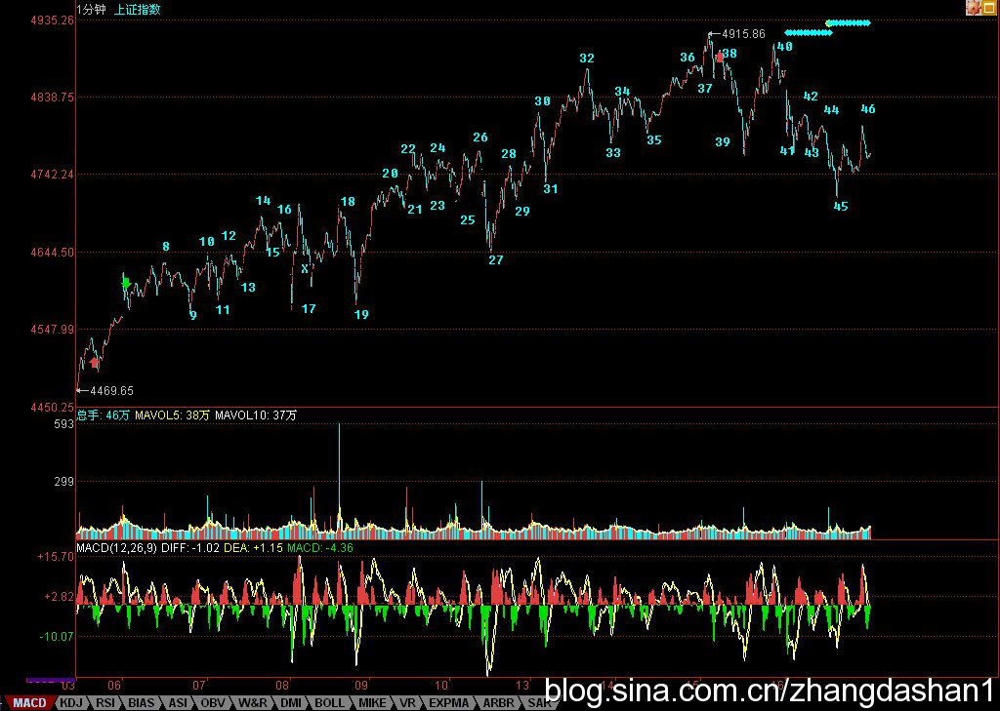
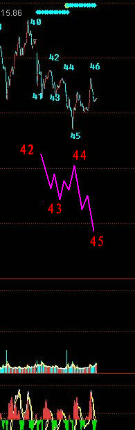
8、特别的线段
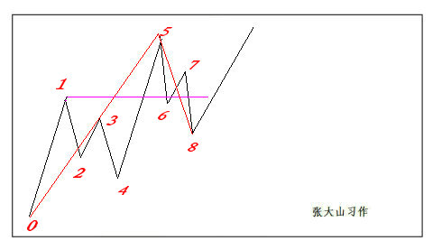
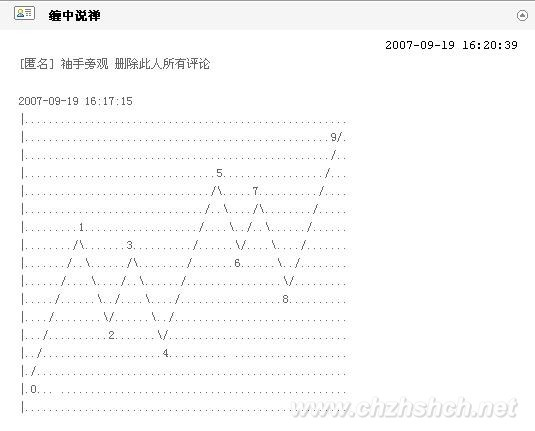
每日解盘(2007-08-01 15:33:01)
该来的调整，必须且及时。(2007-08-01
15:33:01)
本周的K线，本ID在上周已经明确说过，希望是带上影的第二种情况，否则急功近利，只能害了最终的行情。今天的调整，使得这长上影的小阴线已初显。后面两天，关键是第三拨人的做多决心了，强烈回收上去，则还有走出第三种情况，也就是中阳周线的可能，但这种走势，确实有点急功近利，反正，本ID是绝对不出这手的。本ID已经早说了，震荡，对本ID只是一个先卖后买的短差机会。在这里等5周均线上来，更稳健。
技术上，今天的低点并没有跌破前面两高点连线，所以调整在合理的范围内，该线在4260点附近，目前10日线也在该位置，因此是否有效跌破该线是一个大盘调整强弱的重要指标。一旦有效跌破，上周K线留下的缺口将面临考验。对于第三拨人，该线是他们的生命线，当然，对于前两拨，其实无所谓，就看第三拨人表演吧.
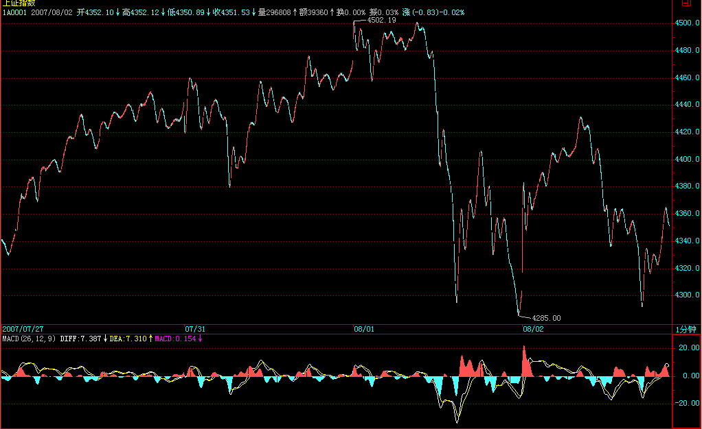
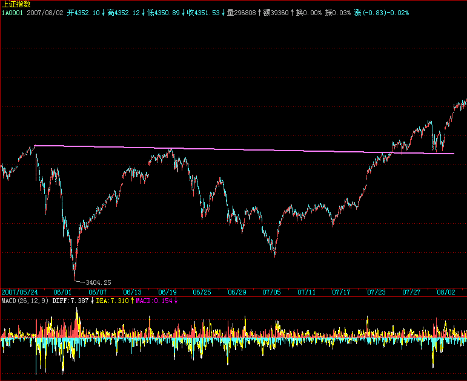
上面，由于今天跌破5日线，因此后面的反抽如果不能上5日线，则大盘的调整将加大，能重新上去，那就将重新挑战4500点。即使能突破4500点，最好能反复震荡，否则，将引起昨天所说的八月中上旬基本面上的重大不稳定因数。还是昨天那句话，不要急功近利，要爱护市场本身。
大的技术上，日线上的背驰段依然成立，如本ID般第一拨进来的，一定不能在这个位置加码，而是用先卖后买打差价的策略，通过震荡把成本降低，万一大盘真不能突破4500点走出多头陷阱，到时候砸起盘来也更爽。大家好好去看看，现在叫嚣冲多少多少点的人，在3600点的时候，是不是那些吼着要跌破多少多少点的。行情是合力的，一步一步走出来的，预测都是忽悠，按照正确的策略去操作才是一切。
如果能看明白线段、中枢、走势类型等的，现在这种行情是最好操作的，注意，节奏一定是先卖后买，卖错了不怕，如果大盘真能突破4500点，很多中低价股都会大幅启动的，还怕买不到好股票？不杀跌、不追涨，按照买卖点来。各位看看今天的高点，是一个15分钟级别的背驰引发的，里面的区间套极端完美，可以仔细研究。由于现在60分钟并没有进入背驰段，因此，不能说日线的背驰段已经被定位。只能看成是一个15分钟卖点引发的。本周注意15分钟以上级别的卖点，这在上周已经提醒，如果没看懂，请好好继续学习。
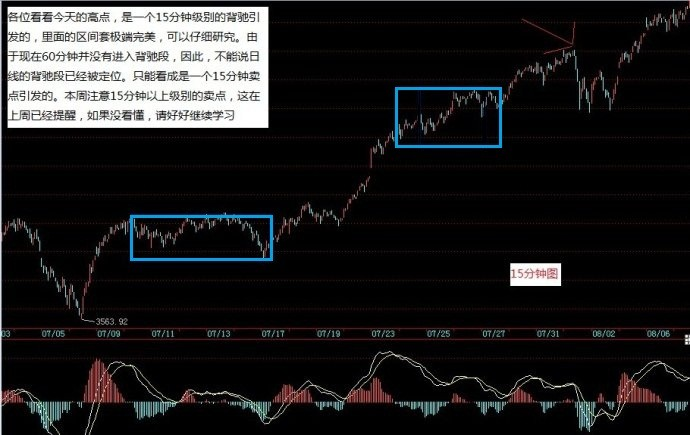
晚上，把关于线段分类的课程放上来。
先下，再见。
明天才是大盘短线的关键
(2007-08-02 16:06:21)
今天，没跌破昨天本ID所说的前期两高点连线以及10日线，所以出现反弹就理所当然了，加上外围因素的影响，也给第三拨进来的人壮了胆。今天，也收在昨天特别强调的5日线上，但这并不意味着大盘就平安无事了。大盘在6月20、21日，也走出过类似的K线组合，而且时间上也是周三、四，而周五的下跌，就使得一轮大调整得以确立。当然，一般来说，历史不会简单重复。这只是要提醒，今天的走势其实并不重要，关键是明天，考虑到周末消息面的因素，这个时间还要延伸到下周一，也就是说，下周一前能否确认重新站住5日线，将是短线大盘走势的关键所在。
对于新进的第三拨人，他们不想就此站上N个月的岗，必须要在这里奋力一搏，现在，比6月20、21日有很多有利的条件，技术上，MACD形态好多了，下面有前期两高点的连线，而上周的周线缺口，技术上有三周不补就以后再补的惯例，也就是说，新进来的一拨人，只要能顶住三周，至少可以把某些中线资金给忽悠进来了。因此，对于这拨人来说，别无选择地，必须守住前期高点连线，重新站稳5日线。
但是，这拨人也有可能最终毁了市场，为什么？这拨人如果急功近利地迅速突破4500点，引发大量新资金涌入，那么上半年的单边行情将不可避免。但目前国家对经济的总体判断与相应的对策，都在一个敏感时期，如此走势，必然导致目前对多头有利的舆论、政策环境发生极为不利的变动。目前，比印花税还要严厉的，就是关于交易制度、规则的改变，如果谁最终乱搞，把这东西给搞出来了，那么，才是真正恶劣的事情。
所以，虽然多头目前当然有能力快速突破4500点，但一个稳健的走势依然是必要的。在4500点附近进行合理的震荡，将对市场长远的发展有好处。甚至，在4000点到4500点进行一个长时间的大箱体震荡，也比又掀起一场连续N根周K线长阳的运动要强。
当然，市场往往不会按照理智的方式进行，市场往往就是醉生梦死疯一回，那么，对于如本ID一样第一拨进来的，一定要采取这样的策略，就是绝对不增仓，因为在3600点开始都买够了，现在还买是脑子水太多的表现。其次，采取保持仓位先卖后买打差价的策略，这样成本降低，就永远立于不败之地。第三，一定不要听任何人忽悠马上要冲多少多少，冲是别人的事情，我们的事情就是坐轿子，你有本身把轿子抬到华山顶上，我们也没意见，但只要有人抬不动，就一定要一脚把轿子给踹了。
个股方面，成分股继续打冲锋，一旦确认周线突破成立，二、三线股会跟上的。下面给出这次下来的一个分段。红绿箭头给出的是黄白线或柱子面积等的对比，看看就知道这些买卖点是完全可以当下判断的。现在，一个1分钟中枢已经形成，短线走势，就看这中枢的演化，一切当下判断。
这两天，北京的雨可露了面了，本ID也不想出去腐败了，免得哪条桥又搞一个N米深的水库回不了家。

今天可以回答各位问题到5点。
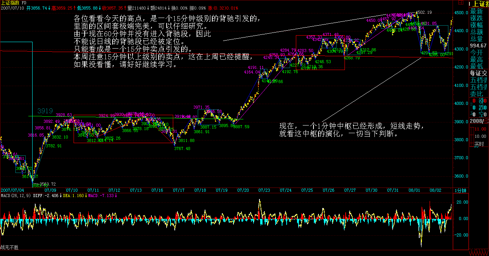
缠中说禅：
2007-08-02 16:16:02 [举报]
[匿名] 知劲草
2007-08-02 16:13:10
一直关注你的帖子，从中受益颇多，请问姐姐怎么看美股以及港股将来的走势，如果全球性股灾来临，中国能独善其身吗？
==
不可以，千万别相信中国股市逆全球股市而涨的忽悠，一天可以，二天可以，但不可能永远。
缠中说禅：
2007-08-02
16:18:13 [举报]
[匿名] 大盘
2007-08-02 16:11:55
请问博主：
进行每笔划分时，相邻k线出现以下三种情况，是否要合并处理：
1）相邻k线的高点或者低点之一相等
2）相邻两k线的高点和低点都相等
3）好几分钟都维持同一价位，也就是k线走势出现“麻点”
==
只要不包含就不需要合并，包含就是有一K线完全在相邻K线的里面。
缠中说禅：
2007-08-02 16:19:25 [举报]
[匿名] 新浪网友
2007-08-02 16:18:29
那么，对于如本ID一样第一拨进来的，一定要采取这样的策略，就是绝对增仓，因此在3600点开始都买够了，现在还买是脑子水太多的表现。
---------
妹子好！
这句话写错了吧？
==
改了，但新浪系统慢，可能还没有显示出来。
当然，市场往往不会按照理智的方式进行，市场往往就是醉生梦死疯一回，那么，对于如本ID一样第一拨进来的，一定要采取这样的策略，就是绝对不增仓，因为在3600点开始都买够了，现在还买是脑子水太多的表现。
缠中说禅：
2007-08-02
16:20:29 [举报]
[匿名] 悠悠
2007-08-02 16:16:30
先沙发。是新报到的。真学着感觉股感。想问缠姐对今天对3姑停盘可有什么看法，和对明天可有什么指示
==
做事情不能过分，过分，当然有搞死理由。
缠中说禅：
2007-08-02
16:24:09 [举报]
[匿名] 田鸡和猪肝
2007-08-02 16:17:40
新学 不好意思
问题1.怎样判断一个走势类型为完成的
2.如可确定中枢震荡形成或完成
=
这在课程里都有，要把这问题说清楚，要把所有课程说一遍，所以还是请把课程通读一遍。例如，某中枢震荡的结束就是形成该中枢的第三类买卖点，这在课程里说过N次了，所以还是请先把课程研究一下。
缠中说禅：
2007-08-02
16:37:27 [举报]
[匿名] 轻风吹断
2007-08-02 16:20:14
今天，经过大幅下跌的华菱认沽权证继昨天反弹之后在下午继续反弹，在整个交易过程中并没有出现剧烈波动的现象．而按照原来的权证交易规则，华菱的涨停价位应该是４.２９１元！也就是说，只有在这个价位才能自动停牌！但你们深交所在下午１３时４３分１６秒起突然对华菱等权证实施了停牌３０分钟的措施，理由居然是＂价格异常波动＂！请问深交所，按你原来的规则此权证涨停价位在４.２９１元，那就是说你允许它涨到这个价位．既然你认为可以涨到这个价位，为什么在此权证还在远离这个价位的时候就说＂异常波动＂了呢？如果这样是异常波动，那涨停价位不是更加是＂异常波动＂，那你们为什么还允许有这个涨停价位？现在，你们自己制造的规则，自己一手打破，请问深交所，这是什么道理？另外，要说＂异常波动＂，股票市场＂５.３０＂大跌后的第五个交易日，大部分股票从跌停板到涨停板，差价波动幅度达到了２０％，这还不够异常吗？当时为什么你们又不将这些股票停牌？
=============================
想听听博主对今天这个事件的看法.
==
327的时候，成交都可以不算，这有什么奇怪的。政策风险本来就是要随时预防的，所以一定要记住，股票是废纸，一定要买点买，只有0成本才是相对安全的，否则无安全可言。
另外，这件事情其实也是一个信号，如果股票也这样，那么规则也是可以改的。
股票是用来操作，不是用来争吵的。股票里，赢钱就是对的，输钱就是错的，其他都是废话。
至于交易所，真正的垄断性机构，如果对他的规则有疑问，可以去外面的交易所，如果一定要在这里，那么，就必须要知道，你面对的是一种什么样的玩意，先把这先决条件给设定好了，否则，那是你的问题，而不是交易所的问题。
缠中说禅：
2007-08-02
16:38:10 [举报]
[匿名] 新浪网友
2007-08-02 16:37:23
[匿名] 天平007
2007-08-02 16:34:23
缠主:
看了你的文章3个月，今天第一次发言：）
通过学习你的理论，很是受用，也在市场中取得不错的收获，谢谢你！
现请教一问题：昨日大盘下跌，你说是15分钟背弛，这我同意，15分钟的确有出现背弛。可我发现30分钟和60分钟也出现了MACD背弛，而你认为60分钟还没出现背弛，我有些迷惑，请指教。
====
60分钟黄白线还没回抽零轴呢。这是我的理解。
-
对
缠中说禅：
2007-08-02
16:43:22 [举报]
[匿名] 百思不解
2007-08-02 16:39:09
博主好：
笔和线段的概念很清楚了，现在就是同级分解的细节有困惑。
比如1f图上线段已划分好，则对1f走势类型做同级分解，请问这同级分解规则能否象线段划分规则一样用严格的数学语言表达呢？
以前课程里虽有大概的描述，但文字描述总有细节不清楚的地方。请博主有时间象讲解线段一样详细讲讲同级分解，最好能在指数图上画出来。
谢谢
==
这在以后都继续说到的，等等。
缠中说禅：
2007-08-02
16:47:11 [举报]
christine
2007-08-02 16:42:11
姐姐，昨晚的新课程看得我很晕，我的理解水平太差了。
1.在标准特征序列里，构成分型的三个相邻元素。
是指构成分型的三笔吗？
2."特征序列的顶分型中，第一和第二元素间不存在特征序列的缺口，那么该线段在该顶分型的高点处结束，该高点是该线段的终点；.....；"和“特征序列的顶分型中，第一和第二元素间存在特征序列的缺口，如果从该分型最高点开始的向下一笔开始的序列的特征序列出现底分型，那么该线段在该顶分型的高点处结束，该高点是该线段的终点；......”此二段描述看着没有什么区别 .
==
特征序列里的三相邻元素不是真实图形的连续的三笔，里面的元素如果是上的线段，是那些向下笔，这在课程里说得很清楚，先把这搞清楚，否则后面肯定看不明白了。
这特征序列的分型，是把特征序列里每一元素当成一个K线所形成的，不是实际图形上的分型。请再研究一下。
缠中说禅：
2007-08-02
16:51:14 [举报]
[匿名] 随风
2007-08-02 16:47:12
姐姐对近期的物价全面上涨怎么看?国家是不是失控了?
==
你看看本ID写的关于货币战争的帖子，2003年没干的事，现在出现这种情况理所当然。现在的问题还不在这里，而是这升值的战车一旦坐上去，就停不下来了，历史上，如此大规模的升值走势后，似乎从来没有过软着陆的情况，中国能否例外，只有天知道了。
缠中说禅：
2007-08-02
16:52:34 [举报]
[匿名] 新浪网友
2007-08-02 16:51:12
老大:图中下面的红\绿箭头不明白啥意思,能否告知一二.(可能问题太幼稚了,不过真的不明白)
==
就是要你看箭头指着的黄白线或柱子面积之间的对比。

缠中说禅：
2007-08-02 16:59:59 [举报]
[匿名] 新浪网友
2007-08-02 16:51:27
[匿名] 新浪网友
2007-08-02 16:50:09
老大辛苦了 那个600636跟老大当初所说的相差甚远 希望老大能回答一下 谢谢
==================================
老大好
==
636没什么问题，在长线建仓中。就像737，虽然从7元多到10元多了，依然在长线建仓中。注意，建仓都是动态 的，如果成本没被降到一定值，建仓完不了。
一个天大的误解，就是建仓时成本要很高，其实高明的人，建仓时，成本就可以不断下降，当然，这种手法，对没耐心、短线思维的人，是痛苦的。所以本ID说过，散户也要学会动态建仓。
缠中说禅：
2007-08-02
17:01:25 [举报]
钱末事
2007-08-02 16:58:28
老大,快5点了,我贴了N次了,问个问题,权证数量发生较大改变,用MACD比较力度怎么去校正呢?另外有空讲讲三个系统另外一个比价系统,好吗?谢谢.
==
无须校正，那以后会说到的
醉生梦死疯一回游戏正式开始(2007-08-03 15:57:58)
坐轿子的感觉确实不错，坐在轿子上看沿路风景，别有一番情趣。下面，是关于坐轿子上华山的第一天日记。这个日记，将有N日N章。
今天大盘的跳空高开，就使得6月20前后的K线组合不可能出现。昨天已经说过“市场往往不会按照理智的方式进行，市场往往就是醉生梦死疯一回”，站在第三拨人的立场上，尽快远离4300点，吸引第四拨人进来，本来就是急切的事，至于后面将引发什么，他们当然无所谓，而前两拨人就更无所谓。一般来说，越到后面的第N拨，其成分将越来越杂乱，如果说第一拨人的成分是最纯净的，到后来，就三教九流，什么都有了。
今天的大盘开始迎来第四拨人里的先头部队，周末如果没有什么太大的坏消息，那么，第四拨人里的主力部队将在下周大面积进入。这拨人的成分将比第三拨更杂，有前三拨中中途开小差的逃兵，有看所谓周线突破有效进入的技术人士，有在外面卖外卖现再回家开店的、更大面积的是那些被钱烧得发慌的各路男女等等，醉生梦死疯一回游戏正式开始。
对于前三拨进来的人，从现在开始，最后埋单的是谁，是N等于几，已经不重要，关键是如何把这个游戏玩得长一点，但这个时间并没有什么上帝去规定，一个合力的结果下，从下周一开始，这个游戏的时间T开始计算，T从0开始，向着尽可能大的数进发。这就如同玩电子游戏，去预测在第几关结束是脑子有水的表现。
也正如玩游戏，关键是操作的策略，而不是去预测游戏在第几关结束。目前的操作也一样，预测都是无聊把戏，关键是有精密的操作。而操作是针对不同人的，如同玩游戏，高手和低手当然不是同一玩法：
对于低手，本ID反复说过最基本的操作策略，就是短线看5日线，中线看5周线，长线看5月线，只要不有效跌破，相应的操作就不用操作了，持股看着就可以。何谓有效跌破，就是跌破后反抽上不来，这种反抽当然和对应级别有关，例如一个月线的跌破，至少要看下个月反抽的情况，而不是看一日。
对于大资金以及散户里的中高手，就是要利用震荡机会就减低成本，一路上涨，一路把成本减下来但持仓数量不变，这样，你的仓位就自然随着大盘的上涨下降，也就是钱越来越多，但筹码没少，这样，是既回避大盘可能的突发非系统风险，又能完全把握市场利润的有效方法。
对于散户里的高手，就要充分利用大盘震荡中板块的轮动机会，获取市场最大的机会。
有人可能问，做不到高手怎么办？那就做低手，持股都不会，大盘晃悠一下就鸡飞狗跳的，那还炒什么股票，让股票炒你就行了。
昨天已经说了“个股方面，成分股继续打冲锋，一旦确认周线突破成立，二、三线股会跟上的。”这个结论继续有效，而且，只要第四拨资金能被忽悠进来，那些已经消除业绩风险的二、三线股，以及有题材的股票将大肆表现，例如，你没看到这两天，本ID已经大肆引诱各位到北京旅游了吗？注意，题材股的操作，一定不要追高，过了这个村，还有那个店，天天都有新机会，不管谁的股票，都不必追高。
股票都是废纸，一个好的策略与心态，能让你把废纸变黄金。
技术上，把今天的分段放上来，还搞不清楚的，请好好学习。例如下图中的7，这是什么？是下面那1分钟中枢的什么？这么标准的图形，都看不明白，那请把ID的课程重新读去。
周末，腐败的时间到了，大家放风去吧，别让股票把自己的生活套牢了，本ID要去风花雪月去也，不陪各位了，自由活动，周日继续音乐会，这次一定不爽约。
先下，再见。
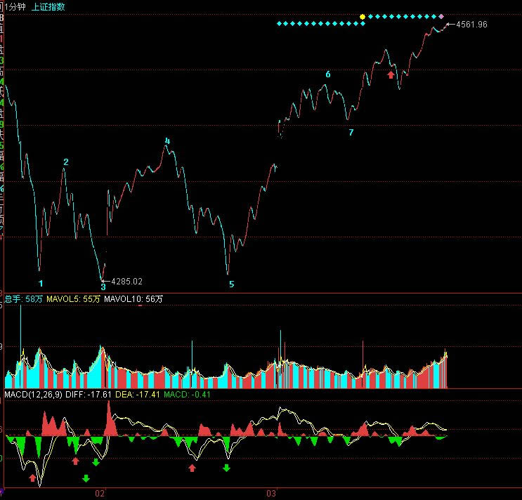
|